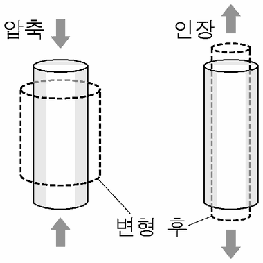

콘크리트
지문을 먼저 읽고, 이해가 막히는 문단에서 ‘그림으로 보기’를 누르세요. 그림은 문단을 따라 바뀝니다.
1문단‘콘크리트’는 건축 재료로 다양하게 사용되고 있다. 일반적으로 콘크리트가 근대 기술의 ㉠산물로 알려져 있지만 콘크리트는 이미 고대 로마 시대에도 사용되었다. 로마 시대의 탁월한 건축미를 보여 주는 판테온은 콘크리트 구조물인데, 반구형의 지붕인 돔은 오직 콘크리트로만 이루어져 있다. 로마인들은 콘크리트의 골재 배합을 달리하면서 돔의 상부로 갈수록 두께를 점점 줄여 지붕을 가볍게 할 수 있었다. 돔 지붕이 지름 45m 남짓의 넓은 원형 내부 공간과 이어지도록 하였고, 지붕의 중앙에는 지름 9m가 넘는 ㉡원형의 천창을 내어 빛이 내부 공간을 채울 수 있도록 하였다.
2문단콘크리트는 시멘트에 모래와 자갈 등의 골재를 섞어 물로 반죽한 혼합물이다. 콘크리트에서 결합재 역할을 하는 시멘트가 물과 만나면 ㉢점성을 띠는 상태가 되며, 시간이 지남에 따라 수화 반응이 일어나 골재, 물, 시멘트가 결합하면서 굳어진다. 콘크리트의 수화 반응은 상온에서 일어나기 때문에 작업하기에도 좋다. 반죽 상태의 콘크리트를 거푸집에 부어 경화시키면 다양한 형태와 크기의 구조물을 만들 수 있다. 콘크리트의 골재는 종류에 따라 강도와 밀도가 다양하므로 골재의 종류와 비율을 조절하여 콘크리트의 강도와 밀도를 다양하게 변화시킬 수 있다. 그리고 골재들 간의 접촉을 높여야 강도가 높아지기 때문에, 서로 다른 크기의 골재를 배합하는 것이 효과적이다.
3문단콘크리트가 철근 콘크리트로 발전함에 따라 건축은 구조적으로 더욱 견고해지고, 형태 면에서는 더욱 다양하고 자유로운 표현이 가능해졌다. 일반적으로 콘크리트는 누르는 힘인 압축력에는 쉽게 부서지지 않지만 당기는 힘인 인장력에는 쉽게 부서진다. 압축력이나 인장력에 재료가 부서지지 않고 그 힘에 견딜 수 있는, 단위 면적당 최대의 힘을 각각 압축 강도와 인장 강도라 한다. 콘크리트의 압축 강도는 인장 강도보다 10배 이상 높다. 또한 압축력을 가했을 때 최대한 줄어드는 길이는 인장력을 가했을 때 최대한 늘어나는 길이보다 훨씬 길다. 그런데 철근이나 철골과 같은 철재는 인장력과 압축력에 의한 변형 정도가 콘크리트보다 작은 데다가 압축 강도와 인장 강도 모두가 콘크리트보다 높다. 특히 인장 강도는 월등히 더 높다. 따라서 보강재로 철근을 콘크리트에 넣어 대부분의 인장력을 철근이 받도록 하면 인장력에 취약한 콘크리트의 단점이 크게 보완된다. 다만 철근은 무겁고 비싸기 때문에, 대개는 인장력을 많이 받는 부분을 정확히 계산하여 그 지점을 ㉣위주로 철근을 보강한다. 또한 가해진 힘의 방향에 수직인 방향으로 재료가 변형되는 점도 고려해야 하는데, 이때 필요한 것이 포아송 비이다. 철재는 콘크리트보다 포아송 비가 크며, 대체로 철재의 포아송 비는 0.3, 콘크리트는 0.15 정도이다.
4문단강도가 높고 지지력이 좋아진 철근 콘크리트를 건축 재료로 사용하면서, 대형 공간을 축조하고 기둥의 간격도 넓힐 수 있게 되었다. 20세기에 들어서면서부터 근대 건축에서 철근 콘크리트는 예술적 ㉤영감을 줄 수 있는 재료로 인식되기 시작하였다. 기술이 예술의 가장 중요한 근원이라는 신념을 가졌던 르 코르뷔지에는 철근 콘크리트 구조의 장점을 사보아 주택에서 완벽히 구현하였다. 사보아 주택은, 벽이 건물의 무게를 지탱하는 구조로 설계된 건축물과는 달리 기둥만으로 건물 본체의 하중을 지탱하도록 설계되어 건물이 공중에 떠 있는 듯한 느낌을 준다. 2층 거실을 둘러싼 벽에는 수평으로 긴 창이 나 있고, 건축가가 ‘건축적 산책로’라고 이름 붙인 경사로는 지상의 출입구에서 2층의 주거 공간으로 이어지다가 다시 테라스로 나와 지붕까지 연결된다. 목욕실 지붕에 설치된 작은 천창을 통해 하늘을 바라보면 이 주택이 자신을 중심으로 펼쳐진 또 다른 소우주임을 느낄 수 있다. 평평하고 넓은 지붕에는 정원이 조성되어, 여기서 산책하다 보면 대지를 바다 삼아 항해하는 기선의 갑판에 서 있는 듯하다.
5문단철근 콘크리트는 근대 이후 가장 중요한 건축 재료로 널리 사용되어 왔지만 철근 콘크리트의 인장 강도를 높이려는 연구가 계속되어 프리스트레스트 콘크리트가 등장하였다. 프리스트레스트 콘크리트는 다음과 같이 제작된다. 먼저, 거푸집에 철근을 넣고 철근을 당긴 상태에서 콘크리트 반죽을 붓는다. 콘크리트가 굳은 뒤에 당기는 힘을 제거하면, 철근이 줄어들면서 콘크리트에 압축력이 작용하여 외부의 인장력에 대한 저항성이 높아진 프리스트레스트 콘크리트가 만들어진다. 킴벨 미술관은 개방감을 주기 위하여 기둥 사이를 30m 이상 벌리고 내부의 전시 공간을 하나의 층으로 만들었다. 이 간격은 프리스트레스트 콘크리트 구조를 활용하였기에 구현할 수 있었고, 일반적인 철근 콘크리트로는 구현하기 어려웠다. 이 구조로 이루어진 긴 지붕의 틈새로 들어오는 빛이 넓은 실내를 환하게 채우며 철근 콘크리트로 이루어진 내부를 대리석처럼 빛나게 한다.
6문단이처럼 건축 재료에 대한 기술적 탐구는 언제나 새로운 건축 미학의 원동력이 되어 왔다. 특히 근대 이후에는 급격한 기술의 발전으로 혁신적인 건축 작품들이 탄생할 수 있었다. 건축 재료와 건축 미학의 유기적인 관계는 앞으로도 지속될 것이다.
윗글을 바탕으로 <보기>에 대해 탐구한 내용으로 적절하지 않은 것은?

철재만으로 제작된 원기둥 A와 콘크리트만으로 제작된 원기둥 B에 힘을 가하며 변형을 관찰하였다. A와 B의 윗면과 아랫면에 수직인 방향으로 압축력을 가했더니 높이가 줄어들면서 지름은 늘어났다. 또, A의 윗면과 아랫면에 수직인 방향으로 인장력을 가했더니 높이가 늘어나면서 지름이 줄어들었다. 이때 지름의 변화량의 절댓값을 높이의 변화량의 절댓값으로 나누어 포아송 비를 구하였더니, 일반적으로 알려진 철재와 콘크리트의 포아송 비와 동일하게 나왔다. 그리고 A와 B의 포아송 비는 변형 정도에 상관없이 그 값이 변하지 않았다. (단, 힘을 가하기 전 A의 지름과 높이는 B와 동일하다.)